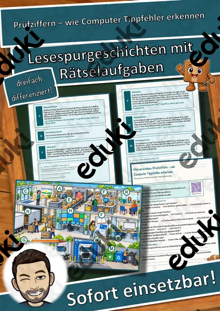
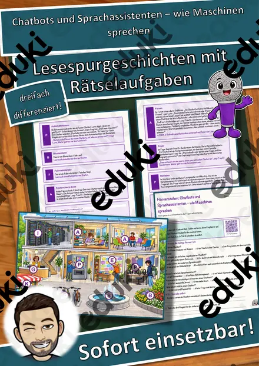
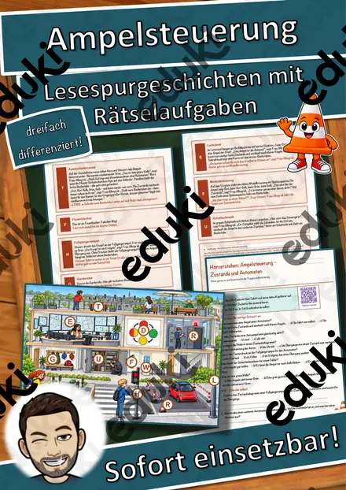
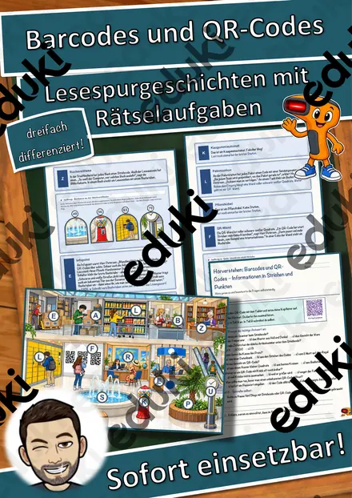
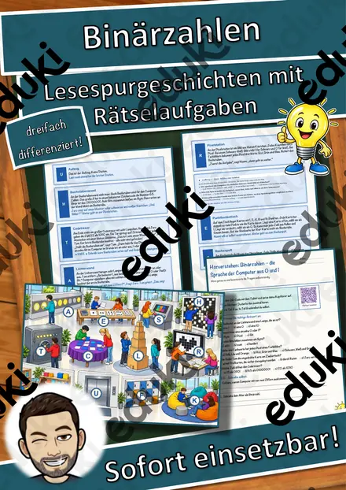
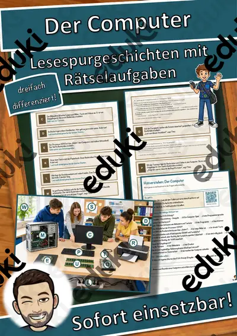

Ein eigenes Spiel programmieren – Figuren, Regeln, Punkte – Lesespurgeschichte mit Rätselaufgaben (Klasse 7)
Ein eigenes Spiel programmieren – Figuren, Regeln, Punkte – Lesespurgeschichte Informatik (Klasse 7)Schick deine Klasse auf eine Lesespur durch ein Jugendmedienhaus! Jana und Mehmet aus der 7c programmieren in einer Spiele-Werkstatt in den Herbstferien ihr erstes eigenes Computerspiel: Ein Raumschiff sammelt Sterne und weicht Meteoriten aus. Die Spieleentwicklerin Frau Varga begleitet sie Schritt für Schritt: Im Ideenraum entsteht die Spielidee auf Papier, im Zeichenstudio werden die Figuren zu Objekten mit Eigenschaften, an der Koordinatenwand wird das Spielfeld zum Koordinatensystem und am Steuerpult reagiert das Spiel auf Ereignisse. In der Regelwerkstatt geht es um Kollisionen, Bedingungen und die Spielschleife, an der Punktetafel um Variablen mit Startwert, am Zufallsautomaten um Zufall und Level und im Testlabor ums Testen und Verbessern. Mehmets Stoff-Rakete Zisch ist immer dabei. Am Ende jedes Abschnitts verrät ein Hinweis den nächsten Ort auf dem Plan – nur wer genau liest, findet den Weg und sammelt alle geheimen Buchstaben zum Lösungswort.
Die perfekte Lesespur für INFORMATIK in der 7. Klasse – ideal zum Thema Programmieren, für Vertretungsstunden, Projekttage und fächerübergreifend mit Mathematik: Sie verbindet sinnentnehmendes Lesen mit den Grundbegriffen der Programmierung, dem Koordinatensystem und einer Rechenaufgabe mit ganzen Zahlen. Das Material ist SOFORT EINSETZBAR, funktioniert ganz ohne Computer und ist in DREI DIFFERENZIERUNGSSTUFEN (leicht ★ / mittel ★★ / schwer ★★★) angelegt.WICHTIG: Das komplette Material ist sowohl in FARBE als auch in SCHWARZ-WEISS enthalten – ideal zum Sparen von Druckkosten.DAS IST ENTHALTEN
- Lesespurgeschichte in 3 Niveaus (leicht, mittel, schwer)
- farbiger Plan vom Jugendmedienhaus als Suchkarte
- Hörverstehen mit QR-Code zur MP3 (selbstständiges Hören mit Kopfhörern)
- vier Aufträge auf dem Weg: eine Zuordnung, ein Quiz, eine Rechenaufgabe und ein Steckbrief
- Rätselseite (Wörter-Suchsel + Fragen zum Spieleprogrammieren)
- Ausmalbild zum Thema (Schreibtisch mit Raumschiff-Spiel und Stoff-Rakete)
- ausführliches Lösungsblatt für die Lehrkraft
- alles zusätzlich als komplette Schwarz-Weiß-VarianteSO GEHT DIE LESESPURDie Jugendlichen lesen ab START, finden im Text den nächsten Ort, suchen ihn auf dem Plan und lesen bei dieser Station weiter. An jeder richtigen Station gibt es einen Buchstaben. Eingeplante Sackgassen (Billardtisch, Aquarium, Tischtennisplatte, Hängematte) sind keine Stationen und dienen der Selbstkontrolle. Am Ende werden die gesammelten Buchstaben umgestellt und ergeben ein geheimes Lösungswort. (Die Lösungen sind selbstverständlich nur im Lösungsblatt für die Lehrkraft enthalten.)INHALTLICHER SCHWERPUNKTSpielidee und Planung, Figuren als Objekte mit Eigenschaften, eigene Grafiken statt fremder Bilder, Spielfeld als Koordinatensystem (x- und y-Werte, negative Werte), Ereignisse wie Tastendruck und Spielstart, Kollision und Bedingungen, Spielschleife, Variablen mit Startwert (Punkte, Leben, Zeit), Zufall und Schwierigkeitsgrad, Testen und Verbessern im Kreislauf.ABGEDECKTER LEHRPLAN (Klasse 7, Informatik)
- Informatik / IT (LehrplanPLUS Bayern) – Jahrgangsstufe 7: Programmieren – Objekte und ihre Eigenschaften, Ereignisse, Bedingungen, Wiederholungen, Variablen und Zufall nutzen; Programme testen und verbessern.
- Mathematik – Jahrgangsstufe 7: Koordinatensystem, Rechnen mit ganzen Zahlen, Terme.
- Deutsch – Jahrgangsstufe 7: Sachtexte sinnentnehmend lesen; Zuhören: einem Hörtext folgen (Hörverstehen mit MP3).Geeignet für Freiarbeit, Stationenlernen, Vertretungsstunden, Wochenplan, Projekttage und als Vorbereitung auf ein eigenes Spieleprojekt. Klassenstufe 7.
Ähnliche Materialien

Das neue Smartphone – sicher einrichten – Lesespurgeschichte mit Rätselaufgaben (Klasse 7)

Prüfziffern – wie Computer Tippfehler erkennen – Lesespurgeschichte mit Rätselaufgaben (Klasse 7)

Chatbots und Sprachassistenten – wie Maschinen sprechen – Lesespurgeschichte mit Rätselaufgaben (Klasse 7)

Ampelsteuerung – Zustände und Automaten – Lesespurgeschichte mit Rätselaufgaben (Klasse 7)

Barcodes und QR-Codes – Informationen in Strichen und Punkten – Lesespurgeschichte mit Rätselaufgaben (Klasse 7)

Binärzahlen – die Sprache der Computer aus 0 und 1 – Lesespurgeschichte mit Rätselaufgaben (Klasse 7)

Der Computer – Lesespurgeschichte mit Rätselaufgaben (Klasse 7)